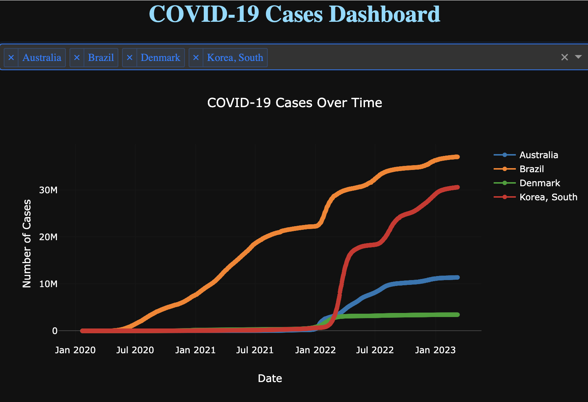

SeatStock-Launching November 30th
Description: SeatStock is an online platform designed to streamline the exchange of university student tickets for sporting events. As a founder and lead frontend engineer, I utilized React and Tailwind CSS to create a user-friendly interface. Stay tuned for a video walkthrough upon the project's launch.
Covid-19 Data Visualizer - In Progress

Description: I'm gaining experience working with extensive datasets, using
John Hopkins University's Covid-19 dataset. Leveraging Python, Flask, and Plotly, I've developed a web application to visualize and compare Covid-19 cases across countries. The project is continually evolving.
Repo:github.com/liamstamper/covid19-visualizer
Portfolio Site
Description: This portfolio site showcases my skills in HTML and CSS. It's designed to provide a glimpse of my professional capabilities and is publicly available on GitHub.
Repo:github.com/liamstamper/portfolio